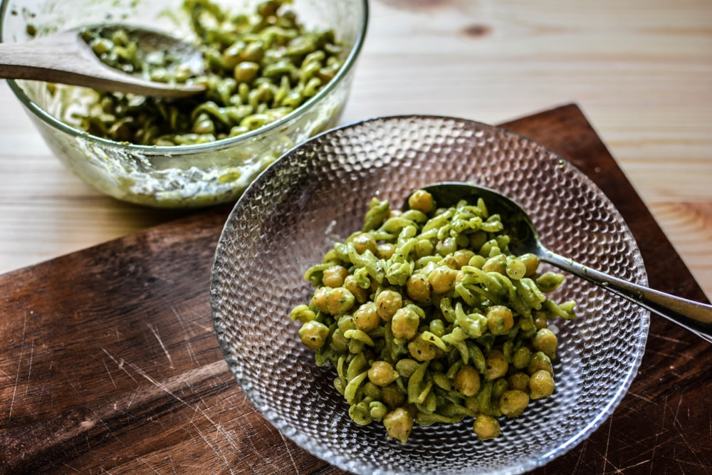

Pestós-csicseriborsós tészta

Leírás
Sok éven át sok különböző helyen való vendégeskedés után azt kell, hogy mondjam: néha abból születnek a legkülönlegesebb vacsorák, amikor valaki azt mondja, “nem tudtam, mit főzzek neked, de nem akartam, hogy unalmas legyen, úgyhogy csak úgy fejből, gondoltam, kicsit feldobom ezzel meg azzal…”, mert akkor általában olyan kombinációról van szó, ami nekem soha nem jutott volna eszembe.
Ilyen a pestós-csicseriborsós fusilli is, amit egyszer vendégségben készített nekem valaki, ezáltal az egyik legegyszerűbb tésztaételt olyan textúrával és ízvilággal felfrissítve, amitől szinte teljesen új ételt kapunk.
Hozzávalók
3 - 4 adaghoz
- 300 gramm fusilli tészta
- 1 konzerv csicseriborsó
- ½ teáskanál fokhagymapor
- ⅓ teáskanál füstölt paprika
- ½ evőkanál rizs-, juhar- vagy agaveszirup
- frissen őrölt bors
- 4 evőkanál olívaolaj
- 2 bögre friss bazsalikomlevél (a szárított nem jó)
- ½ bögre friss petrezselyemlevél
- 2 kövér vagy 3 közepes gerezd fokhagyma
- 3 evőkanál sörélesztőpehely
- 2 evőkanál citromlé
- ¼ bögre dió vagy hántolt mandula (allergiásoknak napraforgómag is lehet)
- só
Elkészítés
- Először is lobogó vízbe tedd fel főni a tésztát egy evőkanál sóval, és a csomagoláson írt főzési időnél 1-2 perccel kevesebb ideig főzd, majd szűrd le, és hideg vízzel öblítsd át.
- A csicseriborsót alaposan öblítsd át, és töröld teljesen szárazra. Egy serpenyőben hevíts fel két evőkanál olívaolajat, és közepes lángon kezdd el pirítani a csicseriborsót. Kb. hat-hét perc elteltével adj hozzá két nagy csipet sót, ½ teáskanál fokhagymaport, pár tekerés frissen őrölt borsot, és ½ evőkanál rizs-, juhar- vagy agaveszirupot. Süsd még 2-3 percig, majd vedd a lángot közepesen alacsonyra, szórd meg ⅓ teáskanál füstölt paprikával, és maximum 1-2 perc múlva zárd el és tedd félre a csicseriborsót.
- A pestóhoz egy késes aprítóba tedd bele az alaposan megmosott bazsalikomot és petrezselymet, a fokhagymát, a sörélesztőpelyhet, a választott magodat, a citromlevet, és ½ teáskanál sót. Ha nincs késes aprítód, egy tálba tedd a hozzávalókat, és botmixert használj. Először is 5-10 másodperc alatt nagyjából aprítsd össze a hozzávalókat, majd szépen lassan, több részletben adagolj hozzá két evőkanál olívaolajat. Ha ez megtörtént, ugyanígy részletekben addig adagolj hozzá vizet, amíg szép pesto állagú szószt nem kapsz (kb. 3-4 evőkanál). Fontos, hogy a pesto enyhén túl sós legyen, különben elveszik az íze a tésztával összekeverve, tehát kóstold, és ha kell, tegyél még hozzá sót.
- Egy lábasban keverd össze a tésztát a pestóval, és közepes lángon melegítsd össze pár perc alatt. A csicseriborsót belekeverheted akár most, de a tészta tetejére is szórhatod tálaláskor.